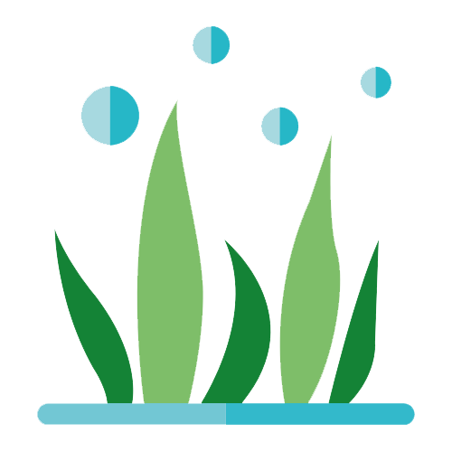

<nav class="navbar navbar-expand-lg navbar-light bg-light">
    <a class="navbar-brand font-weight-bold" href="#">
        MaJu</a>
    <button class="navbar-toggler" type="button" data-toggle="collapse" data-target="#conteudoNavbarSuportado"
        aria-controls="conteudoNavbarSuportado" aria-expanded="false" aria-label="Alterna navegação">
        <span class="navbar-toggler-icon"></span>
    </button>

    <div class="collapse navbar-collapse" id="conteudoNavbarSuportado">
        <ul class="navbar-nav mr-auto">
            <li class="nav-item active">
                <a class="nav-link font-weight-bold" style="color: #00842B" href="#">Home <span class="sr-only">(página
                        atual)</span></a>
            </li>
            <li class="nav-item">
                <a class="nav-link font-weight-bold" style="color: #00842B" href="#">Posts</a>
            </li>
            <li class="nav-item">
                <a class="nav-link font-weight-bold" style="color: #00842B" href="#">Sobre Nós</a>
            </li>
            <li class="nav-item">
                <a class="nav-link font-weight-bold" style="color: #00842B" href="#">Fale Conosco</a>
            </li>

        </ul>
        <form class="form-inline my-2 my-lg-0">
            <input class="form-control mr-sm-2" type="search" placeholder="Pesquisar" aria-label="Pesquisar">
            <button class="btn btn-outline-success my-2 my-sm-0" type="submit">Pesquisar</button>
        </form>
    </div>
</nav>
